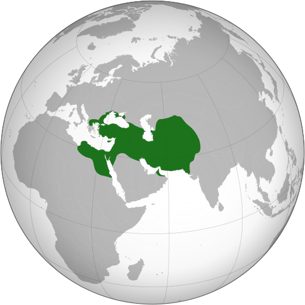

Cuando Ciro nacío el medio oriente se conformaba por 4 estados que dominaban la zona, los cuales son Lidia, Babilonia, Egipto y Media. Ciro vivo en el imperio medo y trabajo parte de la corte real pero decidio rebelerse contra los medos ya que el no era medo, era persa y decidio pelear por Persia. La guerra fue un exito para Ciro quien introdujo reformas al ejercito persa que le dieron la ventaja a pesar de ser un numero menor, esas ventajas fueron la utilización de un nuevo carro de guerra y la reformación del ejercito haciendolo mas flexible y adaptable. una vez vencio a los medos, tomo el control del imperio y continuo extendiendo el suyo, conquistando de maneras ingeniosas a Lidia y Babilonia, donde a diferencia de muchos en la epoca, decidio que los pueblos conquistados los trataria con respeto.
Una vez consolidado su poder hizo reformas que ayudarian a su imperio ser no solo estable pero tambien rentable. Mando a varios Satrapas, que eran gente confiable de Ciro a administrar ciertas regiones y le permitio a la gente que habia conquistado que continuaran con sus vidas sin ningun tipo de restriccion, a cambio de pagar un impuesto y respetar las leyes.